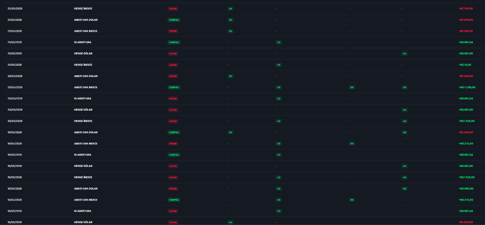
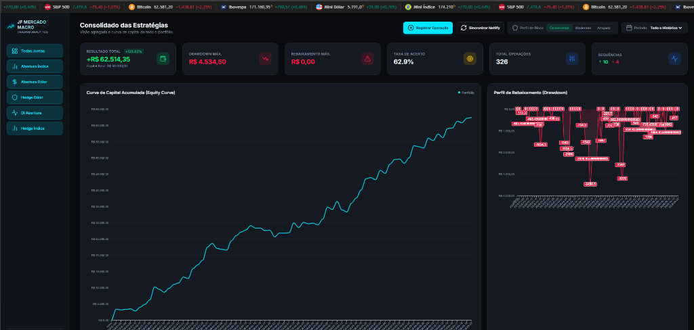

Deslize para a esquerda ou use as setas para iniciar
A renda fixa e carteiras de longo prazo tradicionais perdem poder de compra frente aos ciclos rápidos de inflação e flutuações macro. A B3 oferece oportunidades diárias de alta assimetria.
Você não transfere seu dinheiro para nós. O capital total permanece custodiado em sua própria titularidade.
Nossas decisões não são delegadas a robôs automáticos de caixa preta. Toda a operação é executada manualmente de forma cirúrgica.
Operamos exclusivamente os derivativos com maior liquidez e volume de negócios do Brasil:
Cada investidor possui tolerância diferente a riscos. Ajustamos o tamanho das operações de acordo com o plano estratégico que você selecionar.
Flutuações mínimas. Menor exposição contratual por faixa de patrimônio.
Busca crescimento consistente com rebaixamentos controlados.
Compare e decida com qual perfil de gestão de risco você deseja conectar a sua conta na corretora:
Exposição contratual superior. Ideal para investidores focados em retornos agressivos e dispostos a oscilações mais acentuadas.
Importante:
Você pode alterar o seu perfil de gestão operacional a qualquer momento mediante notificação para realinhamento dos algoritmos de envio de ordens.
Nossos setups possuem um histórico que fornece a base de segurança operacional indispensável no day trade.

Nenhum sistema no mundo ganha todos os dias. O rebaixamento temporário de patrimônio (drawdown) faz parte de qualquer jornada de consistência na B3.

Comprovada pela estatística, nossa metodologia visa o ganho assimétrico: ganhar muito nos momentos favoráveis e limitar estritamente as perdas nos dias de volatilidade atípica.
Não cobramos taxas de administração fixas. Só ganhamos se você ganhar.
Aproveite a nossa expertise em Mini Contratos B3 de maneira simples, transparente e sem taxas fixas.
Cobrança focada puramente em taxa de performance sobre lucro líquido.